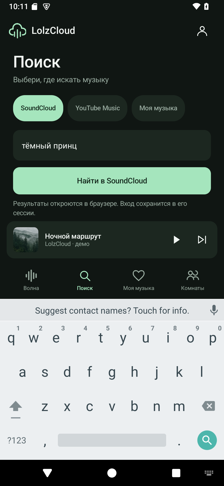
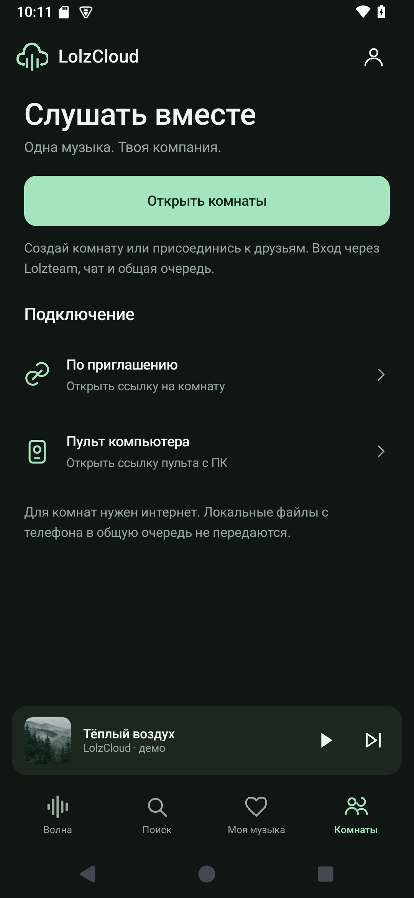
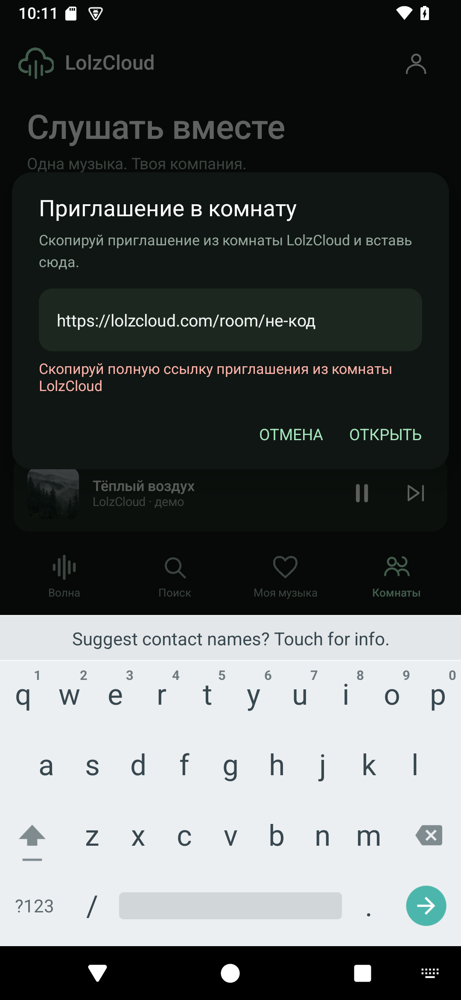
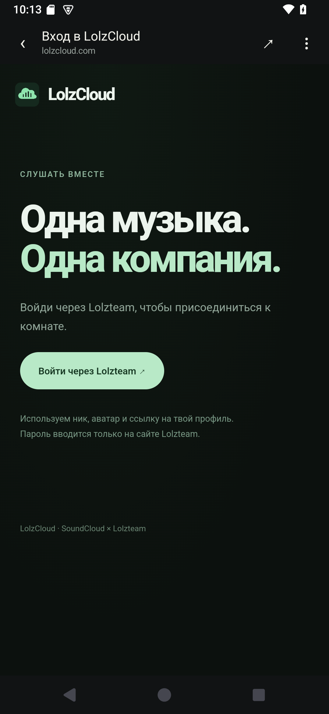
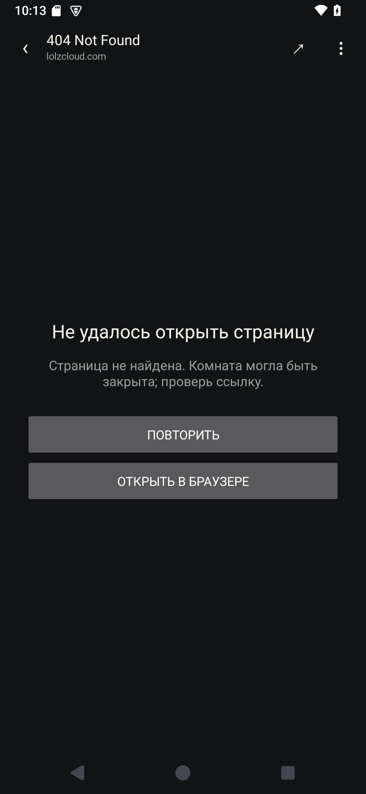
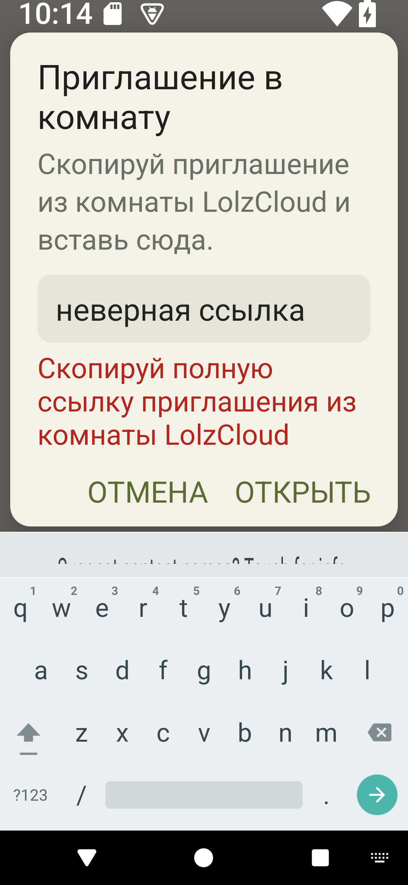
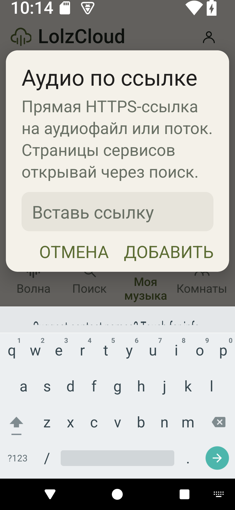

LolzCloud Android 0.1.1
Скриншоты установленного приложения на Android 15. Это реальные интерфейсы, снятые platform UiAutomation. В библиотеке — четыре сгенерированных тестовых MP3 с тишиной и исполнителем «LolzCloud · демо»; они не входят в APK для телефона.
SoundCloud открывается целиком в браузере. Страница входа LolzCloud показана без авторизации в личный аккаунт. При 200% шрифте основная кнопка поиска доступна прокруткой, а действие поиска остаётся на клавиатуре.
Поиск: SoundCloud и клавиатура
Комнаты: приглашение и пульт
Ошибка приглашения под полем
Оформление входа LolzCloud
Восстановление после ошибки
Paper · 360 dp · шрифт 200%
Аудио по ссылке · шрифт 200%
Разбор видео и приёмочные критерии